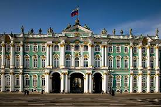
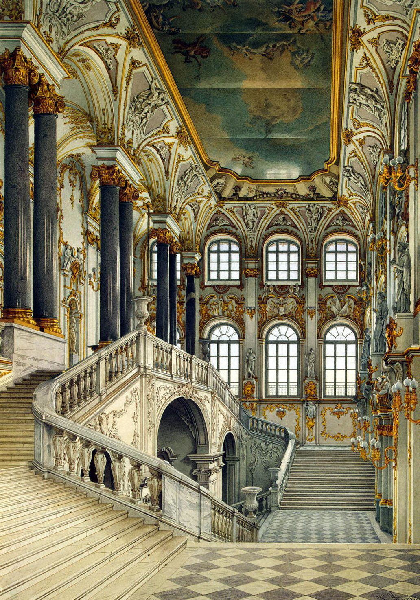
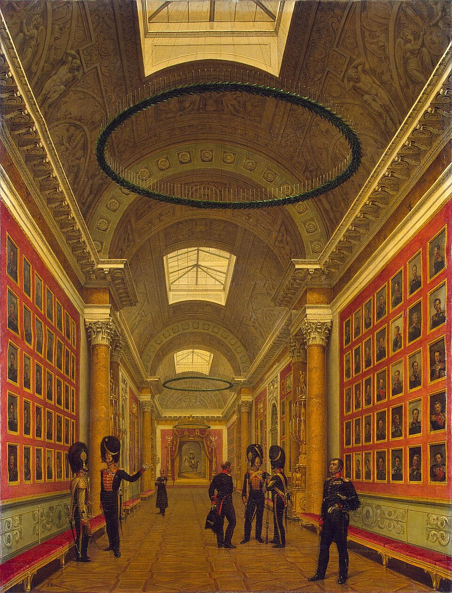
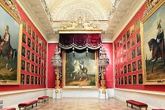
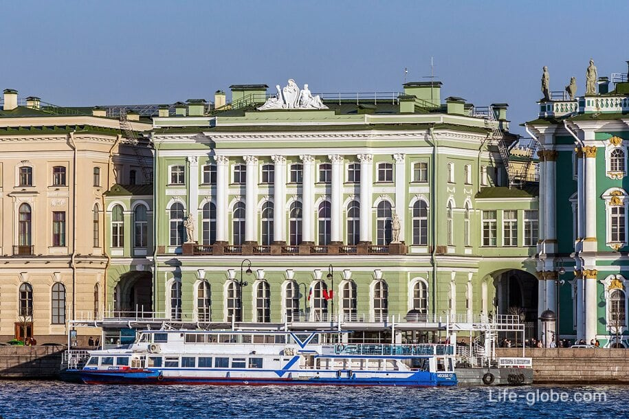
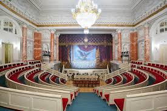

The Hermitage Museum is a world-renowned art and cultural museum located in Saint Petersburg, Russia. Founded in 1764 by Catherine the Great, it has grown into one of the largest and most prestigious museums globally, housing millions of artworks and artifacts spanning human history.
Initially a private collection for the Russian royal family, the Hermitage opened to the public in 1852. It expanded significantly under subsequent rulers, particularly Nicholas I and Alexander II, who acquired vast collections of European art. The museum complex includes the Winter Palace, the Small Hermitage, the Old Hermitage, and the New Hermitage, each showcasing different aspects of the collection.
The Hermitage complex is an architectural masterpiece, blending Baroque, Neoclassical, and Renaissance styles. The Winter Palace, the most iconic building, was designed by Bartolomeo Rastrelli and served as the official residence of Russian monarchs. The museum's interiors are lavishly decorated with ornate ceilings, grand staircases, and opulent halls that enhance the visitor experience.
The Hermitage's collection includes over three million items, with significant holdings in European paintings, sculptures, decorative arts, and archaeological artifacts. Notable works include masterpieces by Leonardo da Vinci, Rembrandt, Michelangelo, and Raphael. The museum also boasts an extensive collection of Russian art and artifacts, providing insight into the country's rich cultural heritage.
Today, the Hermitage serves as a cornerstone of Russian and world culture, attracting millions of visitors annually. Beyond its exhibitions, it contributes to art conservation, research, and international cultural dialogue, cementing its reputation as a leading institution in the museum world.


